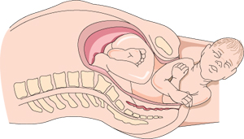

Labor and birth
Soon, you'll experience the amazing process of childbirth! Find out how to spot the signs of labor, and get the facts on pain management, cesarean delivery, and more.
Spot the signs of labor
As you approach your due date, you will be looking for any little sign that labor is about to start. You might notice that your baby has "dropped" or moved lower into your pelvis. This is called "lightening." If you have a pelvic exam during your prenatal visit, your doctor might report changes in your cervix that you cannot feel, but that suggest your body is getting ready. For some women, a flurry of energy and the impulse to cook or clean, called "nesting," is a sign that labor is approaching.
Some signs suggest that labor will begin very soon. Call your doctor or midwife if you have any of the following signs of labor. Call your doctor even if it's weeks before your due date — you might be going into preterm labor. Your doctor or midwife can decide if it's time to go to the hospital or if you should be seen at the office first.
- You have contractions that become stronger at regular and increasingly shorter intervals.
- You have lower back pain and cramping that does not go away.
- Your water breaks (can be a large gush or a continuous trickle).
- You have a bloody (brownish or red-tinged) mucus discharge. This is probably the mucus plug that blocks the cervix. Losing your mucus plug usually means your cervix is dilating (opening up) and becoming thinner and softer (effacing). Labor could start right away or may still be days away.
Did my water break?
It's not always easy to know. If your water breaks, it could be a gush or a slow trickle of amniotic fluid. Rupture of membranes is the medical term for your water breaking. Let your doctor know the time your water breaks and any color or odor. Also, call your doctor if you think your water broke, but are not sure. An easy test can tell your doctor if the leaking fluid is urine (many pregnant women leak urine) or amniotic fluid. Often a woman will go into labor soon after her water breaks. When this doesn't happen, her doctor may want to induce (bring about) labor. This is because once your water breaks, your risk of getting an infection goes up as labor is delayed.
False labor
Many women, especially first-time mothers-to-be, think they are in labor when they're not. This is called false labor. "Practice" contractions called Braxton Hicks contractions are common in the last weeks of pregnancy or earlier. The tightening of your uterus might startle you. Some might even be painful or take your breath away. It's no wonder that many women mistake Braxton Hicks contractions for the real thing. So don't feel embarrassed if you go to the hospital thinking you're in labor, only to be sent home.
So, how can you tell if your contractions are true labor?
Time them. Use a watch or clock to keep track of the time one contraction starts to the time the next contraction starts, as well as how long each contraction lasts. With true labor, contractions become regular, stronger, and more frequent. Braxton Hicks contractions are not in a regular pattern, and they taper off and go away. Some women find that a change in activity, such as walking or lying down, makes Braxton Hicks contractions go away. This won't happen with true labor. Even with these guidelines, it can be hard to tell if labor is real. If you ever are unsure if contractions are true labor, call your doctor.
Stages of labor
Labor occurs in three stages. When regular contractions begin, the baby moves down into the pelvis as the cervix both effaces (thins) and dilates (opens). How labor progresses and how long it lasts are different for every woman. But each stage features some milestones that are true for every woman.
First stage
Most babies' heads enter the pelvis facing to one side, and then rotate to face down.
The first stage begins with the onset of labor and ends when the cervix is fully opened. It is the longest stage of labor, usually lasting about 12 to 19 hours. Many women spend the early part of this first stage at home. You might want to rest, watch TV, hang out with family, or even go for a walk. Most women can drink and eat during labor, which can provide needed energy later. Yet some doctors advise laboring women to avoid solid food as a precaution should a cesarean delivery be needed. Ask your doctor about eating during labor. While at home, time your contractions and keep your doctor up to date on your progress. Your doctor will tell you when to go to the hospital or birthing center.
At the hospital, your doctor will monitor the progress of your labor by periodically checking your cervix, as well as the baby's position and station (location in the birth canal). Most babies' heads enter the pelvis facing to one side, and then rotate to face down. Sometimes, a baby will be facing up, towards the mother's abdomen. Intense back labor often goes along with this position. Your doctor might try to rotate the baby, or the baby might turn on its own.
As you near the end of the first stage of labor, contractions become longer, stronger, and closer together. Many of the positioning and relaxation tips you learned in childbirth class can help now. Try to find the most comfortable position during contractions and to let your muscles go limp between contractions. Let your support person know how he or she can be helpful, such as by rubbing your lower back, giving you ice chips to suck, or putting a cold washcloth on your forehead.
Sometimes, medicines and other methods are used to help speed up labor that is progressing slowly. Many doctors will rupture the membranes. Although this practice is widely used, studies show that doing so during labor does not help shorten the length of labor.
Your doctor might want to use an electronic fetal monitor to see if blood supply to your baby is okay. For most women, this involves putting two straps around the mother's abdomen. One strap measures the strength and frequency of your contractions. The other strap records how the baby's heartbeat reacts to the contraction.
The most difficult phase of this first stage is the transition. Contractions are very powerful, with very little time to relax in between, as the cervix stretches the last, few centimeters. Many women feel shaky or nauseated. The cervix is fully dilated when it reaches 10 centimeters.
Second stage

The baby twists and turns through the birth canal.
The second stage involves pushing and delivery of your baby. It usually lasts 20 minutes to two hours. You will push hard during contractions, and rest between contractions. Pushing is hard work, and a support person can really help keep you focused. A woman can give birth in many positions, such as squatting, sitting, kneeling, or lying back. Giving birth in an upright position, such as squatting, appears to have some benefits, including shortening this stage of labor and helping to keep the tissue near the birth canal intact. You might find pushing to be easier or more comfortable one way, and you should be allowed to choose the birth position that feels best to you.
When the top of your baby's head fully appears (crowning), your doctor will tell you when to push and deliver your baby. Your doctor may make a small cut, called an episiotomy, to enlarge the vaginal opening. Most women in childbirth do not need episiotomy. Sometimes, forceps (tool shaped like salad-tongs) or suction is used to help guide the baby through the birth canal. This is called assisted vaginal delivery. After your baby is born, the umbilical cord is cut. Make sure to tell your doctor if you or your partner would like to cut the umbilical cord.
Third stage
The third stage involves delivery of the placenta (afterbirth). It is the shortest stage, lasting five to 30 minutes. Contractions will begin five to 30 minutes after birth, signaling that it's time to deliver the placenta. You might have chills or shakiness. Labor is over once the placenta is delivered. Your doctor will repair the episiotomy and any tears you might have. Now, you can rest and enjoy your newborn!
Managing labor pain
Virtually all women worry about how they will cope with the pain of labor and delivery. Childbirth is different for everyone. So no one can predict how you will feel. The amount of pain a woman feels during labor depends partly on the size and position of her baby, the size of her pelvis, her emotions, the strength of the contractions, and her outlook.
Some women do fine with natural methods of pain relief alone. Many women blend natural methods with medications that relieve pain. Building a positive outlook on childbirth and managing fear may also help some women cope with the pain. It is important to realize that labor pain is not like pain due to illness or injury. Instead, it is caused by contractions of the uterus that are pushing your baby down and out of the birth canal. In other words, labor pain has a purpose.
Try the following to help you feel positive about childbirth:
- Take a childbirth class. Call the doctor, midwife, hospital, or birthing center for class information.
- Get information from your doctor or midwife. Write down your questions and talk about them at your regular visits.
- Share your fears and emotions with friends, family, and your partner.
Natural methods of pain relief
Many natural methods help women to relax and make pain more manageable. Things women do to ease the pain include:
- Trying breathing and relaxation techniques
- Taking warm showers or baths
- Getting massages
- Using heat and cold, such as heat on lower back and cold washcloth on forehead
- Having the supportive care of a loved one, nurse, or doula
- Finding comfortable positions while in labor (stand, crouch, sit, walk, etc.)
- Using a labor ball
- Listening to music
Water and childbirth
More and more women in the United States are using water to find comfort during labor. This is called hydrotherapy. Laboring in a tub of warm water helps women feel physically supported, and keeps them warm and relaxed. Plus, it is easier for laboring women to move and find comfortable positions in the water.
In waterbirthing, a woman remains in the water for delivery. The American Academy of Pediatrics has expressed concerns about delivering in water because of a lack of studies showing its safety and because of the rare but reported chance of complications. Ask your doctor or midwife if you want to know more about waterbirthing.
Medical methods of pain relief
While you're in labor, your doctor, midwife, or nurse should ask if you need pain relief. It is her job to help you decide what option is best for you. Nowadays women in labor have many pain relief options that work well and pose small risks when given by a trained and experienced doctor. Doctors also can use different methods for pain relief at different stages of labor. Still, not all options are available at every hospital and birthing center. Plus your health history, allergies, and any problems with your pregnancy will make some methods better than others.
Methods of relieving pain commonly used for labor are described in the chart below. Keep in mind that rare, but serious complications sometimes occur. Also, most medicines used to manage pain during labor pass freely into the placenta. Ask your doctor how pain relief methods might affect your baby or your ability to breastfeed after delivery.
| Method | How it can help | Some disadvantages |
|---|---|---|
| Opioids – also called narcotics, are medicines given through a tube inserted in a vein or by injecting the medicine into a muscle. Sometimes, opioids also are given with epidural or spinal blocks. | Opioids can make the pain bearable, and don't affect your ability to push. After getting this kind of pain relief, you can still get an epidural or spinal block later. |
|
| Epidural and spinal blocks – An epidural involves placing a tube (catheter) into the lower back, into a small space below the spinal cord. Small doses of medicine can be given through the tube as needed throughout labor. With a spinal block, a small dose of medicine is given as a shot into the spinal fluid in the lower back. Spinal blocks usually are given only once during labor. | Epidural and spinal blocks allow most women to be awake and alert with very little pain during labor and childbirth. With epidural, pain relief starts 10 to 20 minutes after the medicine has been given. The degree of numbness you feel can be adjusted throughout your labor. With spinal block, good pain relief starts right away, but it only lasts 1 to 2 hours. |
|
| Pudendal block – A doctor injects numbing medicine into the vagina and the nearby pudendal nerve. This nerve carries sensation to the lower part of your vagina and vulva. | This is only used late in labor, usually right before the baby's head comes out. With a pudendal block, you have some pain relief but remain awake, alert, and able to push the baby out. |
|
Inducing labor
Sometimes, a doctor or midwife might need to induce (bring about) labor. The decision to induce labor often is made when a woman is past her due date but labor has not yet begun or when there is concern about the baby or mother's health. Some specific reasons why labor might be induced include:
- A woman's water has broken (ruptured membranes), but labor has not begun on its own
- Infection inside the uterus
- Baby is growing too slowly
- Complications that arise when the mother's Rh factor is negative and her unborn baby's is positive
- Not enough amniotic fluid
- Complications, such as high blood pressure or preeclampsia
- Health problems in the mother, such as kidney disease or diabetes
The doctor or midwife can use medicines and other methods to open a pregnant woman's cervix, stimulate contractions, and prepare for vaginal birth.
Elective labor induction has become more common in recent years. This is when labor is induced at term but for no medical reason. Some doctors may suggest elective induction due to a woman's discomfort, scheduling issues, or concern that waiting may lead to complications. But the benefits and harms of elective induction are not well understood. For instance, we do not know if elective labor induction leads to higher or lower rates of cesarean delivery compared to waiting for labor to start on its own. Yet, doctors have ways to assess risk of cesarean delivery, such as a woman's age, whether it is her first pregnancy, and the status of her cervix. Elective induction (not before 39 weeks) does not appear to affect the health of the baby.
If your doctor suggests inducing labor, talk to your doctor about the possible harms and benefits for both mother and baby, such as the risk of c-section and the risk of low birth weight. You will want to be sure the benefits of inducing labor outweigh the risks of induction and the risks of continuing the pregnancy.
Cesarean birth
Cesarean delivery, also called c-section, is surgery to deliver a baby. The baby is taken out through the mother's abdomen. Most cesarean births result in healthy babies and mothers. But c-section is major surgery and carries risks. Healing also takes longer than with vaginal birth.
Most healthy pregnant women with no risk factors for problems during labor or delivery have their babies vaginally. Still, the cesarean birth rate in the United States has risen greatly in recent decades. Today, nearly 1 in 3 women have babies by c-section in this country. The rate was 1 in 5 in 1995.
Public heath experts think that many c-sections are unnecessary. So it is important for pregnant women to get the facts about c-sections before they deliver. Women should find out what c-sections are, why they are performed, and the pros and cons of this surgery.
Reasons for c-sections
Your doctor might recommend a c-section if she or he thinks it is safer for you or your baby than vaginal birth. Some c-sections are planned. But most c-sections are done when unexpected problems happen during delivery. Even so, there are risks of delivering by c-section. Limited studies show that the benefits of having a c-section may outweigh the risks when:
- The mother is carrying more than one baby (twins, triplets, etc.)
- The mother has health problems including HIV infection, herpes infection, and heart disease
- The mother has dangerously high blood pressure
- The mother has problems with the shape of her pelvis
- There are problems with the placenta
- There are problems with the umbilical cord
- There are problems with the position of the baby, such as breech
- The baby shows signs of distress, such as a slowed heart rate
- The mother has had a previous c-section
Patient-requested c-section: Can a woman choose?
A growing number of women are asking their doctors for c-sections when there is no medical reason. Some women want a c-section because they fear the pain of childbirth. Others like the convenience of being able to decide when and how to deliver their baby. Still others fear the risks of vaginal delivery including tearing and sexual problems.
But is it safe and ethical for doctors to allow women to choose c-section? The answer is unclear. Only more research on both types of deliveries will provide the answer. In the meantime, many obstetricians feel it is their ethical obligation to talk women out of elective c-sections. Others believe that women should be able to choose a c-section if they understand the risks and benefits.
Experts who believe c-sections should only be performed for medical reasons point to the risks. These include infection, dangerous bleeding, blood transfusions, and blood clots. Babies born by c-section have more breathing problems right after birth. Women who have c-sections stay at the hospital for longer than women who have vaginal births. Plus, recovery from this surgery takes longer and is often more painful than that after a vaginal birth. C-sections also increase the risk of problems in future pregnancies. Women who have had c-sections have a higher risk of uterine rupture. If the uterus ruptures, the life of the baby and mother is in danger.
Supporters of elective c-sections say that this surgery may protect a woman's pelvic organs, reduces the risk of bowel and bladder problems, and is as safe for the baby as vaginal delivery.
The National Institutes of Health (NIH) and American College of Obstetricians (ACOG) agree that a doctor's decision to perform a c-section at the request of a patient should be made on a case-by-case basis and be consistent with ethical principles. ACOG states that "if the physician believes that (cesarean) delivery promotes the overall health and welfare of the woman and her fetus more than vaginal birth, he or she is ethically justified in performing" a c-section. Both organizations also say that c-section should never be scheduled before a pregnancy is 39 weeks, or the lungs are mature, unless there is medical need.
The c-section experience
Most c-sections are unplanned. So, learning about c-sections is important for all women who are pregnant. Whether a c-section is planned or comes up during labor, it can be a positive birth experience for many women. The overview that follows will help you to know what to expect during a nonemergency c-section and what questions to ask.
Before surgery
Cesarean delivery takes about 45 to 60 minutes. It takes place in an operating room. So if you were in a labor and delivery room, you will be moved to an operating room. Often, the mood of the operating room is unhurried and relaxed. A doctor will give you medicine through an epidural or spinal block, which will block the feeling of pain in part of your body but allow you to stay awake and alert. The spinal block works right away and completely numbs your body from the chest down. The epidural takes away pain, but you might be aware of some tugging or pushing. See Medical methods of pain relief for more information. Medicine that makes you fall asleep and lose all awareness is usually only used in emergency situations. Your abdomen will be cleaned and prepped. You will have an IV for fluids and medicines. A nurse will insert a catheter to drain urine from your bladder. This is to protect the bladder from harm during surgery. Your heart rate, blood pressure, and breathing also will be monitored. Questions to ask:
- Can I have a support person with me during the operation?
- What are my options for blocking pain?
- Can I have music played during the surgery?
- Will I be able to watch the surgery if I want?
During surgery
The doctor will make two incisions. The first is about 6 inches long and goes through the skin, fat, and muscle. Most incisions are made side to side and low on the abdomen, called a bikini incision. Next, the doctor will make an incision to open the uterus. The opening is made just wide enough for the baby to fit through. One doctor will use a hand to support the baby while another doctor pushes the uterus to help push that baby out. Fluid will be suctioned out of your baby's mouth and nose. The doctor will hold up your baby for you to see. Once your baby is delivered, the umbilical cord is cut, and the placenta is removed. Then, the doctor cleans and stitches up the uterus and abdomen. The repair takes up most of the surgery time. Questions to ask:
- Can my partner cut the umbilical cord?
- What happens to my baby right after delivery?
- Can I hold and touch my baby during the surgery repair?
- When is it okay for me to try to breastfeed?
- When can my partner take pictures or video?
After surgery
You will be moved to a recovery room and monitored for a few hours. You might feel shaky, nauseated, and very sleepy. Later, you will be brought to a hospital room. When you and your baby are ready, you can hold, snuggle, and nurse your baby. Many people will be excited to see you. But don't accept too many visitors. Use your time in the hospital, usually about four days, to rest and bond with your baby. C-section is major surgery, and recovery takes about six weeks (not counting the fatigue of new motherhood). In the weeks ahead, you will need to focus on healing, getting as much rest as possible, and bonding with your baby — nothing else. Be careful about taking on too much and accept help as needed. Questions to ask:
- Can my baby be brought to me in the recovery room?
- What are the best positions for me to breastfeed?
Vaginal birth after c-section (VBAC)?
Some women who have delivered previous babies by c-section would like to have their next baby vaginally. This is called vaginal delivery after c-section or VBAC. Women give many reasons for wanting a VBAC. Some want to avoid the risks and long recovery of surgery. Others want to experience vaginal delivery.
Today, VBAC is a reasonable and safe choice for most women with prior cesarean delivery, including some women who have had more than one cesarean delivery. Moreover, emerging evidence suggests that multiple c-sections can cause serious harm. If you are interested in trying VBAC, ask your doctor if you are a good candidate. A key factor in this decision is the type of incision made to your uterus with previous c-sections.
Your doctor can explain the risks of both repeat cesarean delivery and VBAC. With VBAC, the most serious danger is the chance that the c-section scar on the uterus will open up during labor and delivery. This is called uterine rupture. Although very rare, uterine rupture is very dangerous for the mother and baby. Less than 1 percent of VBACs lead to uterine rupture. But doctors cannot predict if uterine rupture is likely to occur in a woman. This risk, albeit very small, is unacceptable to some women.
The percent of VBACs is dropping in the United States for many reasons. Some doctors, hospitals, and patients have concerns about the safety of VBAC. Some hospitals and doctors are unwilling to do VBACs because of fear of lawsuits and insurance or staffing expenses. Many doctors, however, question if this trend is in the best interest of women's health.
Choosing to try a VBAC is complex. If you are interested in a VBAC, talk to your doctor and read up on the subject. Only you and your doctor can decide what is best for you. VBACs and planned c-sections both have their benefits and risks. Learn the pros and cons and be aware of possible problems before you make your choice.